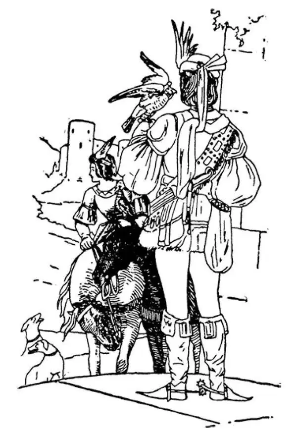

51
Knights and Days of Chivalry
骑士和骑士制度时期

THOSE years in history which I have been telling you about are known as the days of chivalry—which means the times of ladies and gentlemen. The lord and his family were the gentlemen and the ladies. All the other people, by far the greater number, were just common people.
There were no schools for these common people. Little was done for them. They were taught to work and nothing else. The sons of a lord of a castle, however, were very carefully taught. Even they were taught only two things, how to be gentlemen and how to fight. Reading and writing were thought of no importance; in fact, it was usually considered a waste of time to learn such things.
This is the way the son of a lord was brought up. He stayed with his mother until he was seven years old. When he reached the age of seven he was called a page; and for the next seven years—that is, until he was fourteen, he remained a page. During the time he was a page, his chief business was to wait on the ladies of the castle. He ran their errands, carried their messages, waited on tables, etc. He also learned to ride a horse and to be brave and courteous.
When he was fourteen years old, he became a squire and remained a squire for the next seven years; that is, until he was twenty-one. During the time he was a squire he waited on the men, as he had waited on the ladies when he was a page. He attended to the men's horses, went to battle with them, led an extra horse, and carried another spear or lance, in case these should be needed.
When he was twenty-one years old, if he had been a good squire and had learned the lessons that he was taught, he then became a knight. Becoming a knight was an important ceremony like graduating exercises, for the grown boy was now to take up the business of a man.
To get ready for this ceremony, first, he bathed. This may not seem worth mentioning, but in those days one very rarely took a bath, sometimes not for years. He was then dressed in new clothes. Thus washed and dressed, he prayed all night long in the church. When day came, he appeared before all the people and solemnly swore always to do and to be certain things:
To fight for the Christian religion
To protect the weak
To honor women
These were his vows. A white leather belt was then put on him and gold spurs fastened on his boots. After this had been done, he knelt, and his lord struck him over the shoulders with the flat side of a sword, saying as he did so, “I dub thee knight.”
A knight went into battle covered with a suit of armor made of iron rings or steel plates like fish scales, and with a helmet or hood of iron. This suit protected him from the arrows and lances of the enemy. Of course if they had had any shot or shell, armor would have been no use at all, but they had no such things then.
Knights were so completely covered by their armor that when sides became mixed up in fighting, they could not tell one another apart. It was impossible to know who were friends and who were enemies.
So the knights wore, on the outside of the coat that went over their armor, a design of an animal, such as a lion, or of a plant or a rose or a cross or some ornament, and this design was known as a coat of arms.
A knight, as I told you, was first of all taught to be a gentleman, and so we sometimes speak of one who has good manners and is courteous, especially to ladies, as knightly or chivalrous. When a knight came into the presence of a lady he took off his helmet. It meant, “You are my friend, and so I do not need my helmet.” That is why gentlemen raise their hats nowadays when they meet ladies.
But the most important thing the knights had to learn was to fight. Even their games were play fights.
Each country and each age has had its own games or sports in which it has taken special delight. The Greeks had their Olympic Games. The Romans had their chariot races and gladiatorial contests. We have football and baseball. But the chief sport of the knights was a kind of sham battle called the tournament.
The tournament was held in a field known as the lists . Large crowds with banners flying and trumpets blowing would gather around the lists to watch the sham fight, as crowds nowadays flock to a big football game waving pennants and tooting horns. The knights on horseback took their places at opposite ends of the lists. They carried lances, the points of which were covered so that they would not make a wound. At a given signal, they rushed toward the center of the field and tried with their lances to throw each other off their horses. The winner who succeeded in throwing the other knights was presented with a ribbon or a keepsake by one of the ladies, and a knight thought as much of this trophy of victory as the winner of a cup in a tennis tournament nowadays.

Man with falcon（带着猎鹰的骑士）
Knights were very fond of hunting with dogs. But they also hunted with a trained bird called a falcon, and both lords and ladies delighted in this sport. The falcon was trained like a hunting dog to catch other birds, such as wild ducks and pigeons, and also small animals. The falcon was chained to the wrist of the lord or lady, and its head was covered with a hood as it was carried out to hunt. When a bird was seen, the hood was removed, and the falcon, which was very swift, would swoop down upon its prey and capture it. Thereupon the hunter would come up, take the captured animal, and put the hood on the falcon again. The men, however, usually preferred hunting the wild boar, which was a kind of pig with sharp tusks, for this was more dangerous and therefore supposed to be more of a man's sport.
【中文阅读】
现在我讲述的历史上的那些年份被称为骑士制度时期——指的是绅士和贵妇的年代。领主及其家庭成员是绅士和贵妇。所有其他人，比绅士贵妇数目多很多的人，只是平民。
没有供这些平民上的学校。几乎没有人为他们做这些。他们只被传授干活的技能，别的什么也不学。不过城堡领主的儿子则被非常精心地教育着，即使只教他们两件事情——怎样做绅士和怎样打仗。看书写字被认为无足轻重；事实上，学这些东西通常被认为是浪费时间。
领主的儿子就是这样被养育成人的。他和母亲在一起呆到7岁。满7岁时，他被称为骑士侍童；接下来的7年里——就是说，到14岁，他始终是骑士侍童。在这段时间里，他是个小听差，主要任务是侍候城堡里的贵妇人。替她们跑腿，传信， 服侍她们进餐，等等。他也学习骑马，学做勇敢无畏谦恭的人。
14岁时，他成为骑士扈从，在接下来的7年里，就是说，直到他21岁，他始终是骑士扈从。在这段时间里，他是个随从，就像他当骑士侍童时侍候贵妇人那样侍奉骑士。他照料骑士的马匹，跟随他们作战，还牵着另一匹马，扛着另一支长枪或长矛，以备不时之需。
21岁时，如果他是一名表现良好的骑士扈从，已经学会了所教的课程，那么他就成了一名骑士。成为骑士，就像毕业仪式，是一项重要的典礼，因为这个男孩已经成年，现在要开始男人的事业了。
为这项典礼做好准备，首先他要沐浴。这看上去也许不值一提，但是那时候洗一次澡非常难得，有时很多年都不洗澡。沐浴后他穿上新衣服。就这样沐浴更衣后，他在教堂里祈祷整整一晚上。当白天来临时，他出现在所有人面前，庄严宣誓表示要始终做什么样的事，成为什么样的人：
要勇敢，正直
要为基督宗教而战
要保护弱者
要尊重女士
这些就是他的誓言。接着，有人为他系上一条白色皮带，在他的靴子上扣上金马刺。这些做完以后，他跪下，领主一边用剑的扁平的侧面在他双肩上拍打几下，一边说：“我授予你骑士爵位。”
骑士投入战斗时披挂着铠甲，铠甲用铁环或鱼鳞似的钢片制成，还戴着头盔或铁制头罩。这套盔甲保护他免受敌人弓箭和长矛的伤害。当然喽，要是他们中了子弹或炮弹，盔甲就一点用也没有了，但是那时候他们没有这些武器。
骑士们全身被盔甲包得严严实实，双方混战在一起的时候，他们根本无法区分彼此。不可能知道谁是敌谁是友。
所以骑士在罩在铠甲上的外衣外面佩戴一种动物图案，比如狮子，或者植物图案，或者玫瑰图案，或者十字形图案或其他饰物，这种图案被称为盾徽。
正如我告诉过你，骑士首先被教育成一名绅士，所以现在有时候我们把一个举止文雅、谦恭有礼，尤其对女士彬彬有礼的人，说成具有骑士风范或有骑士风度。骑士在贵妇人面前，会摘掉头盔，意思是“你是我朋友，所以我不需要头盔”。这就是为什么当今有风度的男士遇见女士要脱帽致敬。
但是骑士必须学会的最重要的事情是打仗。甚至他们的运动都是打仗比赛。
每个国家、每个时代都有自己的比赛或运动，从中获得不同寻常的乐趣。希腊人有奥林匹克运动会。罗马人有战车比赛和角斗士比武。我们现在有足球和棒球比赛。但是骑士们的主要运动是一种模拟战，被称为马上比武大会。
马上比武大会在称为“比武场”的场地举行。大量民众挥舞着旗帜、吹着喇叭聚集到比武场周围观看模拟战，就像如今观众成群结队摇着三角旗、吹着号角去看 一场盛大的足球比赛一样。骑士们骑着马，在比武场两端各就各位。他们手执长矛，长矛的尖端已经被裹住，这样就不会造成一点伤害。约定的信号一发出，骑士们就冲向场地中央，设法用长矛把对方挑下马来。将另一方骑士挑下马者为胜利者，将得到一位贵妇人授予的一条绶带或一份纪念品。骑士看待这种胜利纪念品和如今网球联赛的获胜者看待赢得的奖杯是一样的。
骑士们非常热衷带着狗打猎。但是打猎时他们也会带上一种训练过的叫做猎鹰的鸟。领主和贵妇们都以这项消遣为乐。猎鹰像猎狗一样受过训练，捕捉像野鸭、鸽子这样的鸟，也捕捉小动物。带出去打猎时，猎鹰拴在领主或贵妇的手腕上，头上罩着头罩。一发现鸟，就被摘去头罩，猎鹰迅速地扑向猎物，捉住它。随即，猎手赶上前，拾起捕获的猎物，重新给猎鹰带上头罩。不过男人通常喜欢猎取长着锋利獠牙的野猪，因为这更加危险，所以被认为是更适合男人的消遣运动。